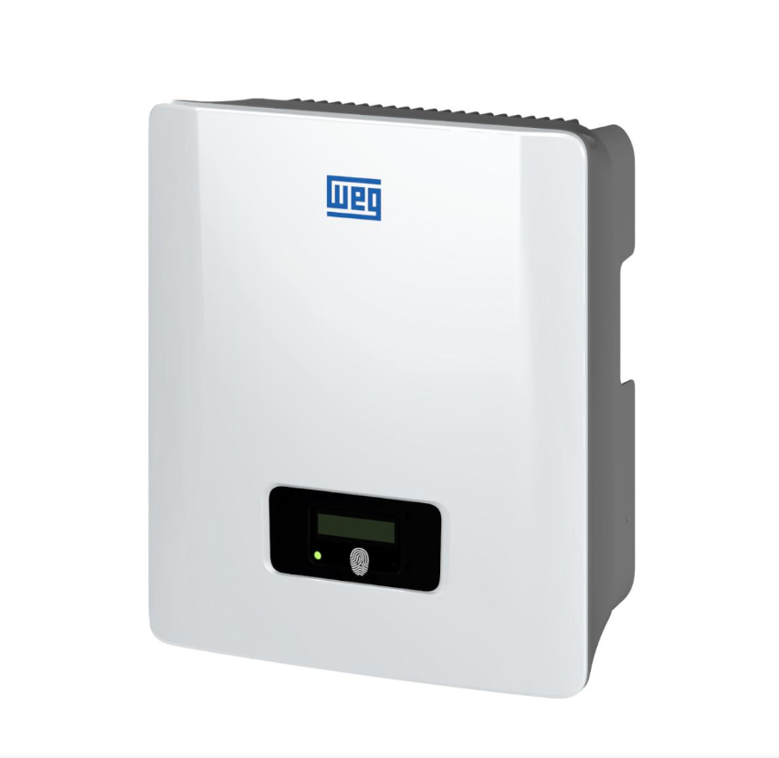

INVERSORES DAS PLACAS SOLARES INTELBRAS
Os inversores são o "cérebro" de um sistema fotovoltaico, convertendo a energia contínua (DC) gerada pelas placas solares em energia alternada (AC) compatível com a rede elétrica ou aparelhos domésticos. A Intelbras, uma das líderes em soluções de energia solar no Brasil, oferece inversores eficientes, confiáveis e acessíveis para residências, comércios e indústrias. Os modelos da Intelbras são projetados para maximizar a eficiência, com tecnologias como MPPT (Maximum Power Point Tracking) que otimizam a produção de energia em até 98%. Eles também incluem proteções contra surtos, sobrecargas e variações de tensão, garantindo segurança e durabilidade. A Intelbras foca em inversores on-grid e híbridos, ideais para quem quer economizar na conta de luz ou gerar autonomia energética. Todos os inversores Intelbras usam MPPT avançado para extrair o máximo de energia, mesmo em dias nublados. Eficiência global acima de 97%, com resfriamento passivo (sem ventiladores barulhentos) para operação silenciosa. A maioria inclui Wi-Fi ou Ethernet para monitoramento remoto via app Solar Intelbras ou portal web. Você pode acompanhar produção em tempo real, consumo e alertas de manutenção pelo celular.
